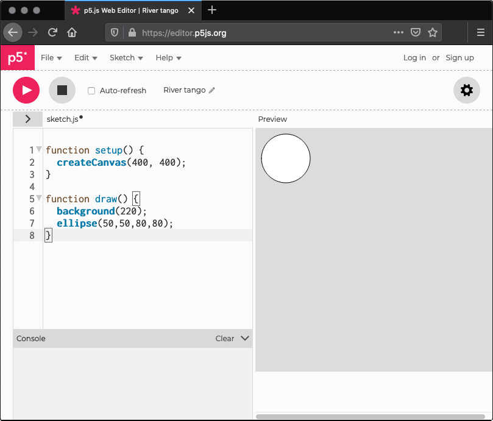
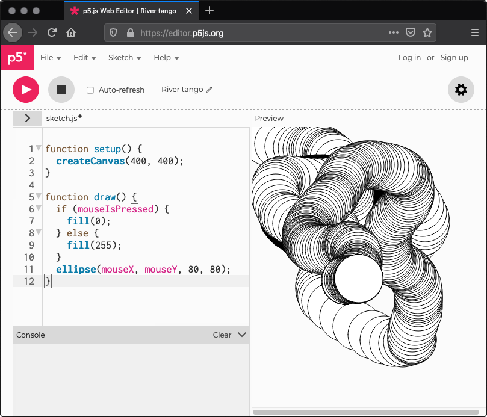
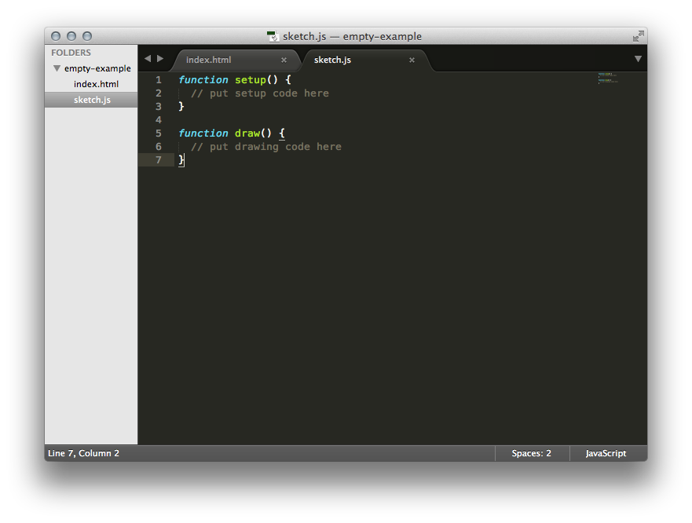

Get Started
This page walks you through setting up a p5.js project and making your first sketch. The easiest way to start is using the p5.js editor, you can open the web editor and can scroll down to Your First Sketch. If you would like to work on the the desktop version of p5.js you can scroll down to downloading instructions,.
Your First Sketch
Code snippet with ellipse
In the p5.js web editor you should find the following code:
function setup() {
createCanvas(400, 400);
}
function draw() {
background(220);
}
After background(220); include this line of code: ellipse(50,50,80,80);.
Now your code should be like this:
Code snippet with ellipse
function setup() {
createCanvas(400, 400);
}
function draw() {
background(220);
ellipse(50,50,80,80);
}
The line you just added draws an ellipse, with its center 50 pixels over from the left and 50 pixels down from the top, with a width and height of 80 pixels.
On the editor press play to display your code in action!
Note for screenreader users
If you are using a screen reader, you must turn on the accessible outputs in the p5 online editor, outside the editor you must add the accessibility library in your html. To learn more visit using p5 with a screen reader tutorial.
If you've typed everything correctly, this will appear in the display window:
If nothing appears, the editor may be having trouble understanding what you’ve typed. If this happens, make sure that you've copied the example code exactly: the numbers should be contained within parentheses and have commas between each of them, the line should end with a semicolon, and ellipse has to be spelled correctly.
One of the most difficult things about getting started with programming is that you have to be very specific about the syntax. The browser isn't always smart enough to know what you mean, and can be quite fussy about the placement of punctuation. You'll get used to it with a little practice. In the bottom left of the editor you will find the console section. Here, you can find messages from the editor with details about any errors it encounters.
Code snippet with interaction
Next, we'll skip ahead to a sketch that's a little more exciting. Modify the last example to try this:
function setup() {
createCanvas(400, 400);
}
function draw() {
if (mouseIsPressed) {
fill(0);
} else {
fill(255);
}
ellipse(mouseX, mouseY, 80, 80);
}
This program creates a canvas that is 400 pixels wide and 400 pixels high, and then starts drawing white circles at the position of the mouse. When a mouse button is pressed, the circle color changes to black. Run the code, move the mouse, and click to experience it.
What Next?
- Check out the learn page and examples page for more.
- Watch The Coding Train and Kadenze video tutorials.
- View the reference for full documentation.
- If you wish to use p5 with a screenreader, check out the p5 with a screenreader tutorial.
- If you have used Processing in the past, read the Processing transition tutorial to learn how to convert from Processing to p5.js, and the main differences between them.
Setting up p5.js with an editor on your own computer
To run p5.js in your computer you will need a text editor. You can use the code editor of your choice. Instructions for getting set up with Sublime Text 2 are included below, other good editor options include Brackets and Atom. If you are a screen reader user and not using the p5 web editor, you may want to use Notepad++ or Eclipse.
Downloading a copy of the p5.js library
The easiest way to start is by using the empty example that comes with the p5.js complete download.
After download, you need to set up a local server. See instructions
here
. Run your local server within the downloaded folder and on your browser, go to
http://localhost:{your-port-num}/empty-example
If you look in index.html, you'll notice that it links to the file p5.js. If you would like to use the minified version (compressed for faster page loading), change the link to p5.min.js.
<script src="../p5.min.js"></script>Using a hosted version of the p5.js library
Alternatively, you can link to a p5.js file hosted online. All versions of p5.js are stored in a CDN (Content Delivery Network). You can find a history of these versions in the p5.js CDN. In this case you can change the link to:
<script src="https://cdn.jsdelivr.net/npm/p5@[p5_version]/lib/p5.js"></script>A sample HTML page might look like this:
<html>
<head>
<script src="https://cdn.jsdelivr.net/npm/p5@[p5_version]/lib/p5.js"></script>
<script src="sketch.js"></script>
</head>
<body>
<main>
</main>
</body>
</html>
Environment
Open Sublime. Go to the File menu and choose Open... and choose the folder that your html and js files are located in. On the left sidebar, you should find the folder name at the top, with a list of the files contained in the folder directly below.
Click on your sketch.js file and it will open on the right where you can edit it. 
Open the index.html file in your browser by double clicking on it in your file manager or type: file:///the/file/path/to/your/html
(or http://localhost:{your-port-num}/empty-example
if you are using a local server)
in the address bar to view your sketch.